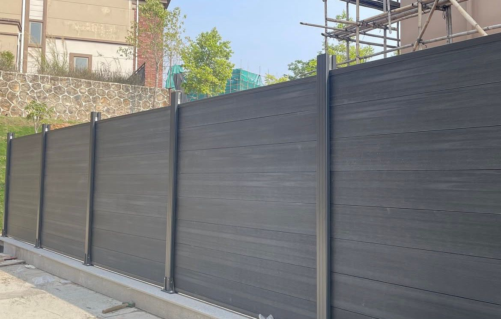
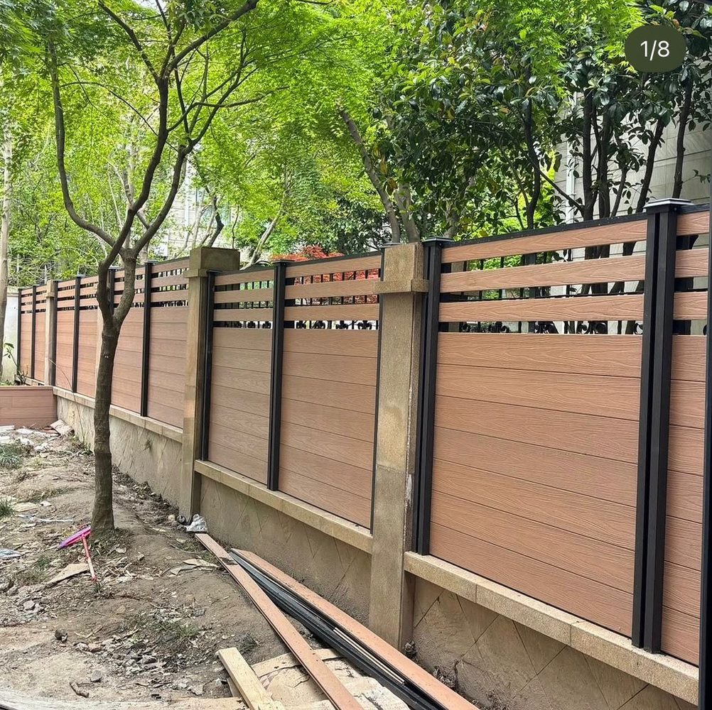
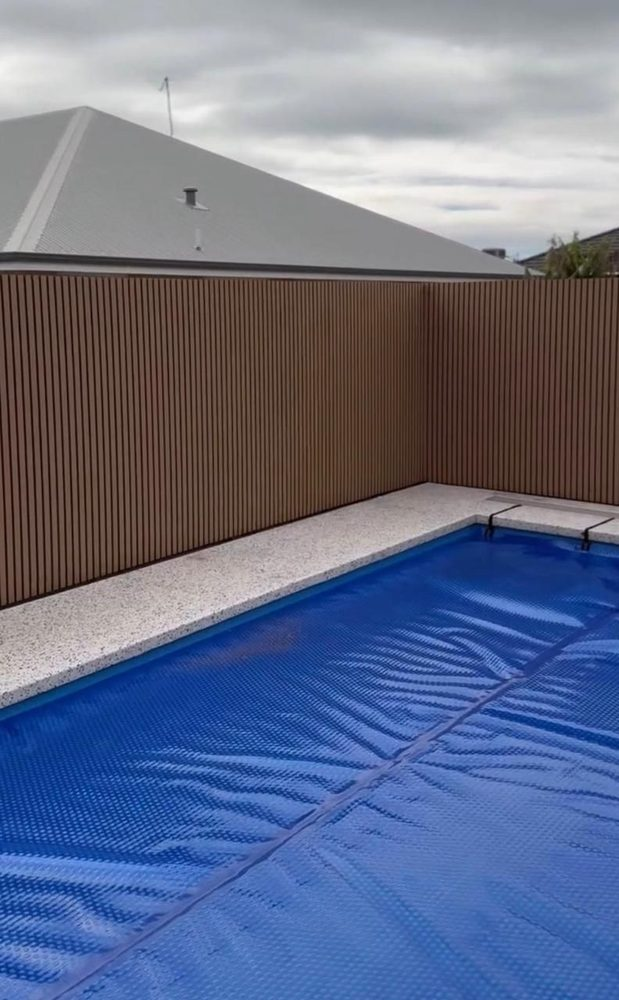
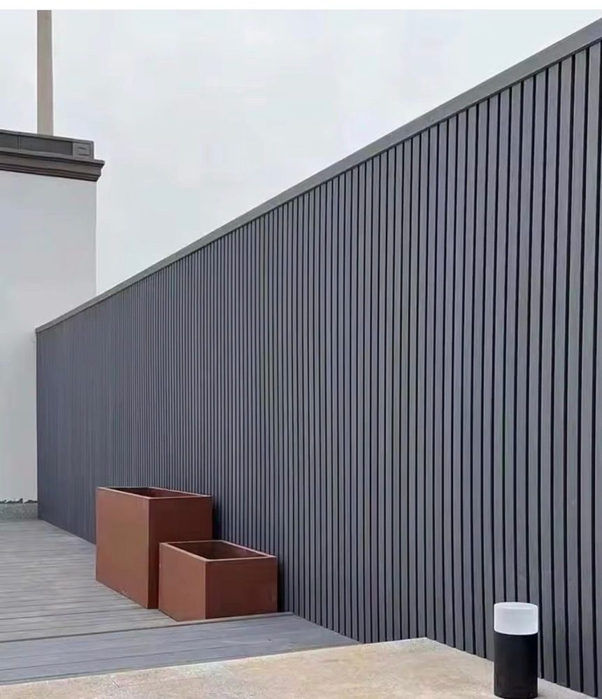
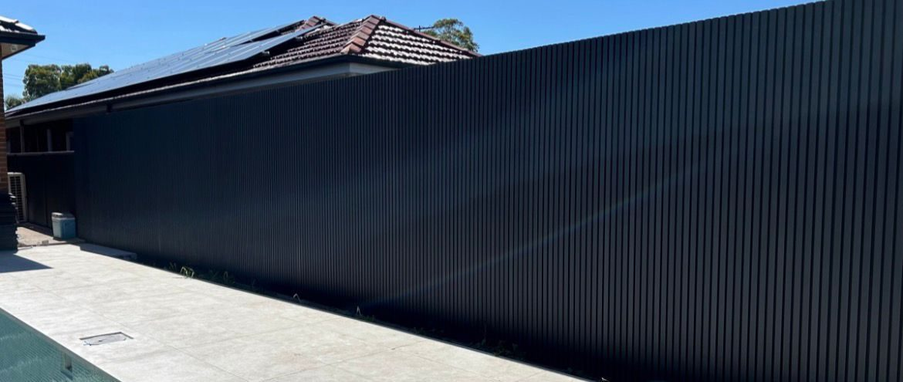

Colour & Finish Range
WPC fencing colours
A full woodgrain range that looks like real timber — from deep Charcoal and rich Teak to soft Ashwood and cool Slate Grey. Every colour is moulded into a co-extruded ASA/PE cap, so the finish holds for the life of the fence and never needs painting.
Single-Tone Woodgrain
Seven classic composite colours.
Each board carries an embossed woodgrain texture under a fused UV cap. These are our core single-tone finishes — the go-to choices for a clean, consistent boundary that reads as natural timber from the street.
Dual-Tone Colourways
Two tones for a designer façade.
Because every board is dual-sided, you can pair a warm woodgrain face with a deep Black reverse or feature course — a layered, architectural look that suits modern and rendered homes. Eight ready-to-order combinations:
Real Installs
The colours in the flesh.
Screens aren't paint chips. Here are real Fencly privacy fences and cladding walls so you can see how each finish reads in daylight.






Choosing a Colour
How to choose a colour for your home
The best fence colour isn't about a favourite — it's about how the finish sits against your walls, roof and light. A boundary is one of the largest single surfaces on a property, so the colour you pick shapes how the whole garden and façade read. The good news is that WPC gives you a genuine timber look in a palette that never needs painting, so you can commit to a finish knowing it will look the same in fifteen years. A few simple rules make the choice easy:
- Dark homes: a charcoal render, dark brick or black-trim home usually looks sharpest with Charcoal or Slate Grey — the fence recedes and the garden pops. A Walnut or IPE run adds warmth without fighting the façade.
- Light rendered walls: against white or off-white render, warm woodgrains like Teak, Ashwood or Antique read like natural timber and stop the boundary feeling stark.
- Coastal glare: near the water, strong afternoon glare washes out very dark tones and makes them run hot. Mid and lighter finishes hold their character and stay cooler — see our best WPC fence colours for coastal Sydney guide.
- Match your Colorbond roof: pulling the fence toward your roof colour ties the whole property together. Monument and Basalt roofs sit beautifully with Charcoal; Woodland Grey pairs with Slate Grey; warmer roofs suit Walnut or Teak.
- Dual-tone for a designer look: a woodgrain face with a Black reverse or feature course gives a modern, layered façade at no extra cost — ideal for architectural and new-build homes.
It's also worth thinking about aspect and use. A west-facing fence takes the full heat of the afternoon, so a lighter tone will stay cooler and hold its look; a shaded southern boundary can carry a deep Charcoal or Walnut without any heat concern. Around pools, spas and outdoor kitchens — anywhere people brush past the boards — a mid or lighter finish is the comfortable choice. And if your fence doubles as a backdrop for planting, a warm woodgrain makes greenery read richer than a flat grey ever will.
Still deciding? The safest move is to see the finishes in your own light — which is exactly what our free on-site sample service is for. To go deeper on the range, pricing and fitting, browse our WPC fencing Sydney hub, the cost guide and the installation guide, or explore the full product range.
We bring the colours to you — free. During your on-site measure, we lay physical WPC samples against your home, your render and your roof in real daylight, so you choose a colour you'll love for decades rather than guessing from a screen.
Prefer to see them first? Request a sample set from the homepage, or book your free measure and we'll bring the full range.
Colour FAQ
WPC fencing colour questions.
Do WPC colours fade?
Fencly's co-extruded board wraps the colour and woodgrain inside a fused ASA/PE cap, so UV, rain and salt hit the cap — not the core. The finish holds for the life of the fence, backed by our 15-year written warranty. Cheap uncapped WPC is what chalks and fades within a few years.
Can I mix two colours?
Yes. Every board is dual-sided, so a dual-tone look — a woodgrain face with a Black reverse or feature course — is easy and costs no more. You can also tie the fence, gates and cladding together with matching or contrasting tones.
Which colour is coolest in the sun?
Lighter tones. Ashwood, Slate Grey and Antique reflect more heat than dark Charcoal or Walnut, so they stay cooler to the touch — worth it for a poolside screen or a west-facing boundary.
Can I get a sample?
Yes, and it's free. We bring physical colour samples to your free on-site measure so you can hold each finish against your home in real daylight, or request a sample set from the homepage.
Ready to pick your finish? Book a free measure or call 0421 201 613. See also WPC fencing in Sydney, pricing and installation.
Free Measure & Samples
See your colour on-site.
Book a free measure and we'll bring the full WPC colour range to your home — then quote your boundary at a fixed price, inclusive of GST.